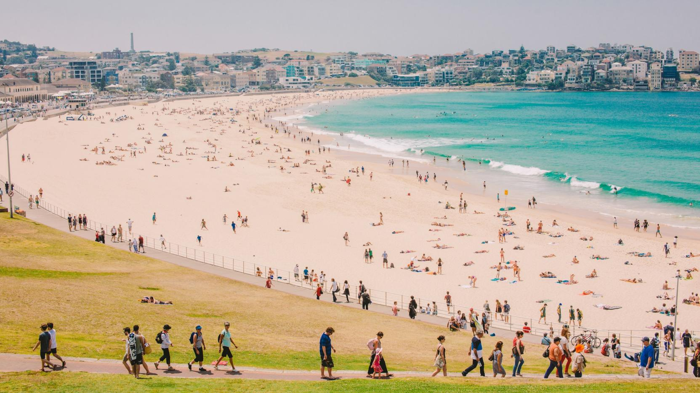

General Information
What is it?
Bondi Beach is a popular beach in Sydney and is one of the most visited tourist sites in Australia. Bondi Beach is about 1 kilometre long and receives many visitors throughout the year. It is a beautiful location, with clear blue skies, wonderful soft sand and cool refreshing water, and a must for any summer trip to Sydney.
Things to Do
How to Chill
Sydney’s iconic Bondi Beach has something for everyone: surf and sand, glitzy bars and cafes, a farmers market, boutique street stalls, scenic running tracks and accommodation to suit a range of budgets. So head on over, either take a leisurely stroll along one of the most beautiful beaches in the world or enjoy the view with some fine quality food.
For more information, click here.
History
A Public Beach
"Bondi" or "Boondi" is an Aboriginal word meaning water breaking over rocks or noise of water breaking over rocks. In 1851 Edward Smith Hall and Francis O'Brien purchased 0.81 squared kilometres of the Bondi area that included most of the beach frontage, which was named "The Bondi Estate." Hall was O'Brien's father-in-law. Between 1855 and 1877 O'Brien purchased his father-in-law's share of the land, renamed the land the "O'Brien Estate," and made the beach and the surrounding land available to the public as a picnic ground and amusement resort. As the beach became increasingly popular, O'Brien threatened to stop public beach access. However, the Municipal Council believed that the Government needed to intervene to make the beach a public reserve. On 9 June 1882, the Bondi Beach became a public beach.
Location
Where you can find it
Bondi Beach is located 7 km east of the Sydney central business district, in the local government area of Waverley Council, in the Eastern Suburbs. Travelling by car is probably the easiest but the parking near the beach is generally a nightmare. Catching a bus from the city is also pretty easy but it can take anywhere from 45 to 60 minutes depending on the traffic. Catching a train to Bondi Junction and then a bus to the beach is generally a good option and takes about 30 to 40 minutes from the city. Bondi Junction is about 3 km from the beach so it's only a short bus trip.